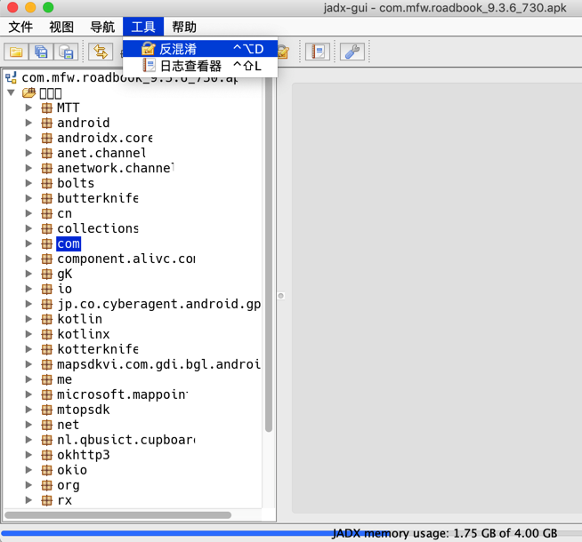
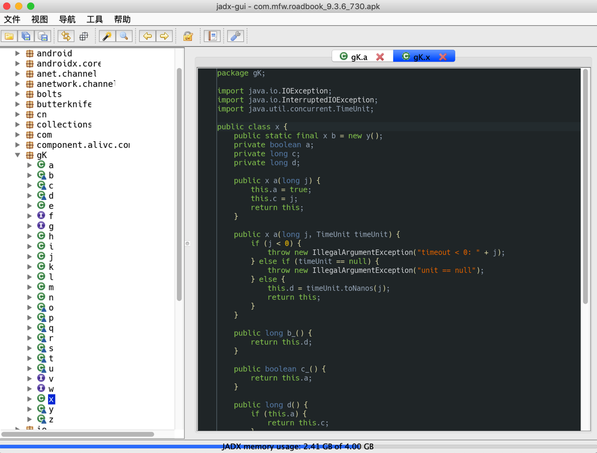
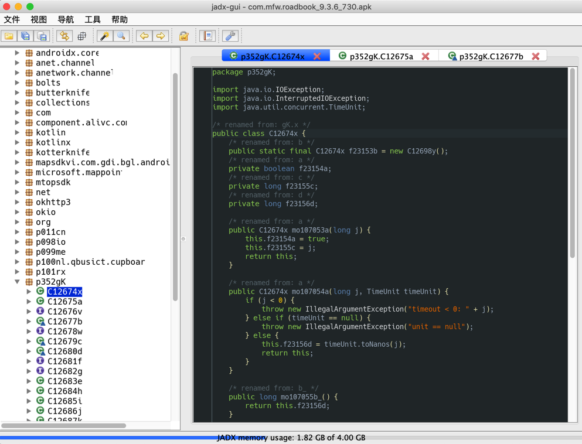

反混淆
- 反混淆概述
- 混淆
- 很多app都做了代码混淆处理，导致解析出来的（类、属性、函数等）变量名，都是混淆后的值
- 典型的是
a、b、c、d等值 - 让（逆向的）你看难直接看出代码逻辑
- 典型的是
- 很多app都做了代码混淆处理，导致解析出来的（类、属性、函数等）变量名，都是混淆后的值
- 反混淆
- 部分反编译器，比如此处的jadx，支持（基本的）反混淆
- 所谓的基本的反混淆，主要指的是：变量的重名名
- 比如，至少可以把
a变成C12657a，w变成p647w等，至少看起来能稍微容易区分出不同变量值，让（逆向的）你，看反混淆后的代码的逻辑，稍微降低点难度
- 比如，至少可以把
- 所谓的基本的反混淆，主要指的是：变量的重名名
- 部分反编译器，比如此处的jadx，支持（基本的）反混淆
- 混淆
Jadx中如何开启反混淆deobfuscation
- jadx中开启反混淆
- cli=命令行：加参数
--deobf- 举例
jadx --deobf -d . 360Wallpaper_1.0.4_apkcombo.com.apk - 更多相关子参数，可以根据需求去设置
--deobf - activate deobfuscation --deobf-min - min length of name, renamed if shorter, default: 3 --deobf-max - max length of name, renamed if longer, default: 64 --deobf-cfg-file - deobfuscation map file, default: same dir and name as input file with '.jobf' extension --deobf-cfg-file-mode - set mode for handle deobfuscation map file: 'read' - read if found, don't save (default) 'read-or-save' - read if found, save otherwise (don't overwrite) 'overwrite' - don't read, always save 'ignore' - don't read and don't save --deobf-use-sourcename - use source file name as class name alias --deobf-parse-kotlin-metadata - parse kotlin metadata to class and package names --deobf-res-name-source - better name source for resources: 'auto' - automatically select best name (default) 'resources' - use resources names 'code' - use R class fields names- 详见：jadx的help语法
- 举例
- gui=图形界面：勾选
Enable deobfuscation- 默认没有勾选
Enable deobfuscation，各子参数也是灰色不可设置 - 勾选上
Enable deobfuscation- 注：相关子项参数，则可以（根据自己需要去）设置了
- 默认没有勾选
- cli=命令行：加参数

反混淆前后效果对比
cli命令行版本输出代码结果详细对比
AndroidMenifest.xml反混淆前后对比- 类名目录对比
- 某个类：ComponetDialog


某个类的代码详细对比
总体效果的截图对比：

详细代码：
- 混淆前：
360Wallpaper_jadx/sources/com/com/bytedance/overseas/sdk/a/a.java
package com.com.bytedance.overseas.sdk.a;
import android.app.Activity;
import android.content.Context;
import android.content.Intent;
import android.net.Uri;
import android.text.TextUtils;
import com.bytedance.sdk.openadsdk.c.l;
import com.bytedance.sdk.openadsdk.core.model.o;
import com.bytedance.sdk.openadsdk.core.n;
import com.bytedance.sdk.openadsdk.o.aa;
import com.tradplus.ads.common.serialization.asm.Label;
import java.util.HashMap;
import java.util.Map;
/* compiled from: AndroidRGPDownLoader.java */
/* loaded from: classes3.dex */
public class a extends b {
public a(Context context, o oVar, String str) {
super(context, oVar, str);
}
@Override // com.com.bytedance.overseas.sdk.a.b, com.com.bytedance.overseas.sdk.a.c
public boolean a() {
com.bytedance.sdk.openadsdk.core.model.c cVar = this.a;
if (cVar == null) {
return false;
}
return a(this.f17562b, cVar.c(), c(), this.f17563c);
}
@Override // com.com.bytedance.overseas.sdk.a.b
public boolean b() {
if (this.f17562b.ae() != null) {
if (a(this.f17562b.ae().a(), c(), this.f17563c, this.f17562b)) {
return true;
}
if (!this.f17564d || this.f17565f.get()) {
this.f17564d = true;
HashMap hashMap = new HashMap();
a(this.f17562b, hashMap);
com.bytedance.sdk.openadsdk.c.c.e(c(), this.f17562b, this.f17563c, "open_fallback_url", hashMap);
return false;
}
return false;
}
return false;
}
public static boolean a(o oVar, String str, Context context, String str2) {
Intent a;
if (oVar != null && oVar.av() == 0) {
return false;
}
try {
if (TextUtils.isEmpty(str) || (a = aa.a(context, str)) == null) {
return false;
}
a.putExtra("START_ONLY_FOR_ANDROID", true);
if (!(context instanceof Activity)) {
a.addFlags(Label.FORWARD_REFERENCE_TYPE_SHORT);
}
context.startActivity(a);
HashMap hashMap = new HashMap();
a(oVar, hashMap);
com.bytedance.sdk.openadsdk.c.c.e(context, oVar, str2, "click_open", hashMap);
return true;
} catch (Throwable unused) {
}
return false;
}
public static boolean a(String str, Context context, String str2, o oVar) {
try {
if (TextUtils.isEmpty(str)) {
return false;
}
Uri parse = Uri.parse(str);
Intent intent = new Intent("android.intent.action.VIEW");
intent.setData(parse);
if (!(context instanceof Activity)) {
intent.addFlags(Label.FORWARD_REFERENCE_TYPE_SHORT);
}
HashMap hashMap = new HashMap();
a(oVar, hashMap);
com.bytedance.sdk.openadsdk.c.c.e(n.a(), oVar, str2, "open_url_app", hashMap);
context.startActivity(intent);
l.a().a(oVar, str2);
return true;
} catch (Throwable unused) {
return false;
}
}
private static void a(o oVar, Map<String, Object> map) {
if (oVar != null) {
map.put("auto_click", Boolean.valueOf(!oVar.a()));
}
}
}
- 混淆后：（类相应的也改名了）
360Wallpaper_jadx_deobf/sources/com/com/bytedance/overseas/sdk/p484a/C9830a.java
package com.com.bytedance.overseas.sdk.p484a;
import android.app.Activity;
import android.content.Context;
import android.content.Intent;
import android.net.Uri;
import android.text.TextUtils;
import com.bytedance.sdk.openadsdk.core.C8938n;
import com.bytedance.sdk.openadsdk.core.model.C8900c;
import com.bytedance.sdk.openadsdk.core.model.C8931o;
import com.bytedance.sdk.openadsdk.p426c.C8412c;
import com.bytedance.sdk.openadsdk.p426c.C8464l;
import com.bytedance.sdk.openadsdk.p482o.C9399aa;
import com.tradplus.ads.common.serialization.asm.Label;
import java.util.HashMap;
import java.util.Map;
/* compiled from: AndroidRGPDownLoader.java */
/* renamed from: com.com.bytedance.overseas.sdk.a.a */
/* loaded from: classes3.dex */
public class C9830a extends C9831b {
public C9830a(Context context, C8931o c8931o, String str) {
super(context, c8931o, str);
}
@Override // com.com.bytedance.overseas.sdk.p484a.C9831b, com.com.bytedance.overseas.sdk.p484a.InterfaceC9832c
/* renamed from: a */
public boolean mo13261a() {
C8900c c8900c = this.f33212a;
if (c8900c == null) {
return false;
}
return m13270a(this.f33213b, c8900c.m17098c(), m13262c(), this.f33214c);
}
@Override // com.com.bytedance.overseas.sdk.p484a.C9831b
/* renamed from: b */
public boolean mo13263b() {
if (this.f33213b.mo16804ae() != null) {
if (m13268a(this.f33213b.mo16804ae().m17032a(), m13262c(), this.f33214c, this.f33213b)) {
return true;
}
if (!this.f33215d || this.f33216f.get()) {
this.f33215d = true;
HashMap hashMap = new HashMap();
m13269a(this.f33213b, hashMap);
C8412c.m18752e(m13262c(), this.f33213b, this.f33214c, "open_fallback_url", hashMap);
return false;
}
return false;
}
return false;
}
/* renamed from: a */
public static boolean m13270a(C8931o c8931o, String str, Context context, String str2) {
Intent m14850a;
if (c8931o != null && c8931o.mo16787av() == 0) {
return false;
}
try {
if (TextUtils.isEmpty(str) || (m14850a = C9399aa.m14850a(context, str)) == null) {
return false;
}
m14850a.putExtra("START_ONLY_FOR_ANDROID", true);
if (!(context instanceof Activity)) {
m14850a.addFlags(Label.FORWARD_REFERENCE_TYPE_SHORT);
}
context.startActivity(m14850a);
HashMap hashMap = new HashMap();
m13269a(c8931o, hashMap);
C8412c.m18752e(context, c8931o, str2, "click_open", hashMap);
return true;
} catch (Throwable unused) {
}
return false;
}
/* renamed from: a */
public static boolean m13268a(String str, Context context, String str2, C8931o c8931o) {
try {
if (TextUtils.isEmpty(str)) {
return false;
}
Uri parse = Uri.parse(str);
Intent intent = new Intent("android.intent.action.VIEW");
intent.setData(parse);
if (!(context instanceof Activity)) {
intent.addFlags(Label.FORWARD_REFERENCE_TYPE_SHORT);
}
HashMap hashMap = new HashMap();
m13269a(c8931o, hashMap);
C8412c.m18752e(C8938n.m16660a(), c8931o, str2, "open_url_app", hashMap);
context.startActivity(intent);
C8464l.m18615a().m18612a(c8931o, str2);
return true;
} catch (Throwable unused) {
return false;
}
}
/* renamed from: a */
private static void m13269a(C8931o c8931o, Map<String, Object> map) {
if (c8931o != null) {
map.put("auto_click", Boolean.valueOf(!c8931o.m16924a()));
}
}
}
GUI版本中的对比
未开启反混淆


-》都是a,b,c,d,j等变量名
开启反混淆
之前的gK,io等，就反混淆了：

变量名改为了：f23154a，f23155c，虽然反混淆后的效果很一般，但是至少比a,b,c更容易看懂一些。